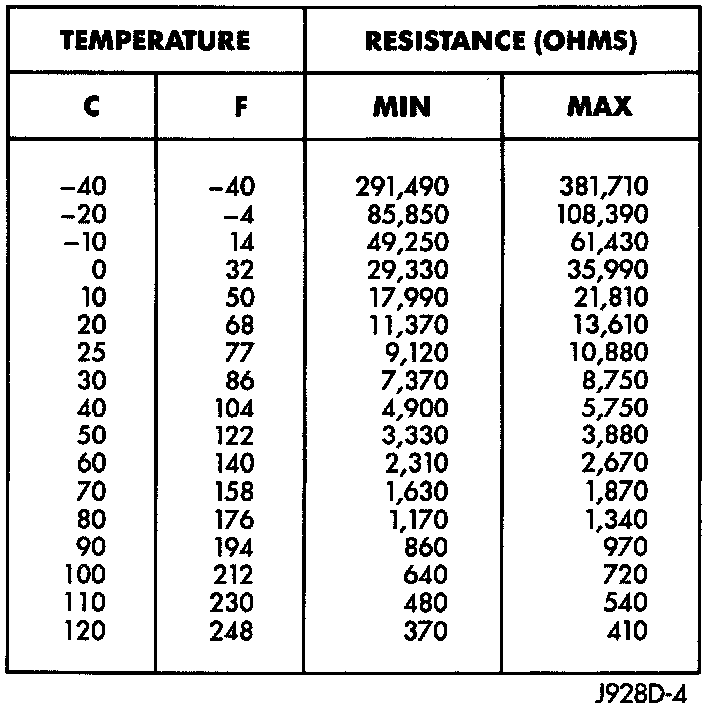

Operation CHARM
: Car repair manuals for everyone.
Русский
Home
>>
Jeep
>>
1997
>>
Grand Cherokee 4WD L6-4.0L VIN S
>>
Repair and Diagnosis
>>
Specifications
>>
Electrical Specifications
>>
Computers and Control Systems
>>
Coolant Temperature Sensor/Switch (For Computer)
Coolant Temperature Sensor/Switch (For Computer)
CTS & IAT Resistance Chart Verses Temperature:
